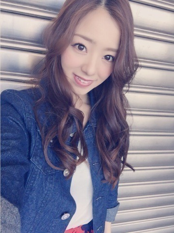
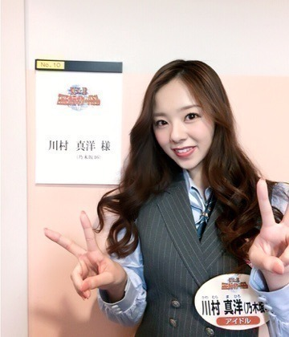
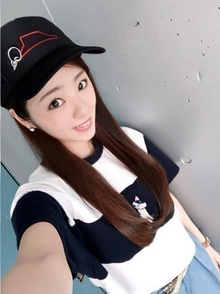
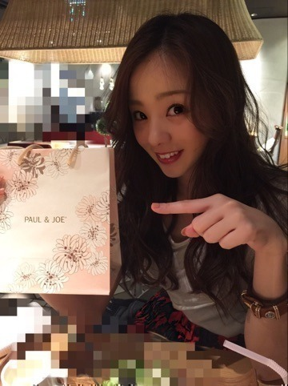

おつかれさまです！
かわむら まひろです♡

まだblogの方では告知をしていなかったのですが(ﾟoﾟ;; 、、明日6/1 18時55分START！
「THEカラオケ★バトル」に出演します！！！
TV東京系です！！！！
〈最強女子ボーカリストNo. 1決定戦〉に2度目の出演なのですが...
プロの方々の中での戦い... 緊張しましたぁぁぉ♪♪♪ でも本当に楽しかったです！！
前回は「未来予想図Ⅱ」を歌いまして，今回は前よりも難しい曲にチャレンジしました。 是非、チェックお願いします♡

はい♡ そして日曜日は個別握手会でした♡
来てくれた皆ありがとう(^_-)
いつも温かい皆さんから，今回も沢山元気をもらったよ？？
でね，七瀬の生誕祭にも参加したよん。
七瀬に手紙を読ませて頂きました♡
生誕祭後，次は鍋食べに行く約束をしたよ♡笑
今，私の家に，七瀬の生誕キャップ帽があるよぉー．♪笑 ピザハットさんとドイヤさんがコラボしとるんですね．笑 かわいい．

ぁ、ちなみに、この犬のTシャツは七瀬とお揃っちです♡ 去年の夏、何でもない日のプレゼント． めっちゃ気に入ってるの．
Tシャツとデニムとニット帽で握手会してたんだけど，私のファンの方達は，こんな感じのカジュアルなTシャツにデニムに帽子。みたいな格好の方が好きみたいです♡♡
「今日の服好き」って言ってくれる方が多かったヾ(＠⌒ー⌒＠)ノ
そんな感じで...
これはお友達とご飯に行った時ですね♡笑

以上♡か
カラオケバトル、私なりに頑張ったので，また感想とかも聞かせてください（ ; ; ）
では、そろそろお仕事に戻ります．
またねぇ(^_-)ノ